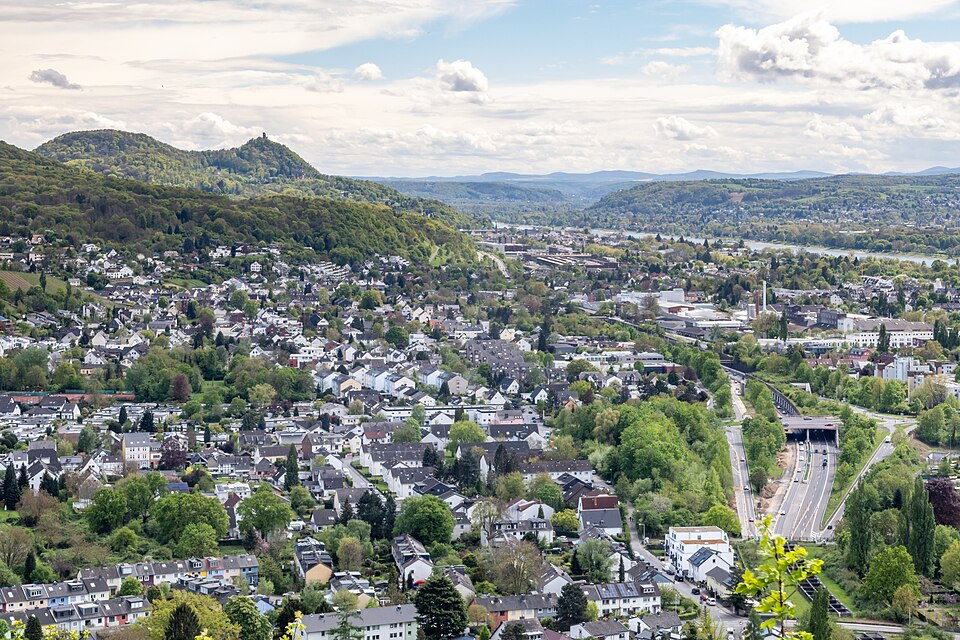

Germany
The Rhineland
Cologne · Bonn · Düsseldorf — Dom, Beethoven, Altbier & Kölsch
261 places · 4 areas · every one sourced, pinned and status-checked · last checked · 2 closed, kept for the record. Ordered by tier, then by number of named sources. How we choose
Kölsch · Altbier · Beethoven-Haus

Start with

Cologne / Köln 98 places · area 1 of 4
Dom · Altstadt · Ehrenfeld · Südstadt
-
1 Must see within Cologne / Köln
Kölner Dom
Cologne's Gothic cathedral of St Peter, begun 1248 and completed 1880, is a UNESCO World Heritage Site and Germany's most-visited landmark. Climb the 533 steps of the south tower for the city view; inside are the Shrine of the Three Kings and the Gerhard Richter window.
Look for Gothic cathedral, UNESCO
Domkloster 4, 50667 Köln, Germany
Recommended by ,
-
2 Must see within Cologne / Köln
Groß St. Martin
The tall crossing tower of this Romanesque basilica dominates the Rhine-side Altstadt skyline beside the Fischmarkt. One of Cologne's twelve great Romanesque churches, rebuilt after WWII.
Look for Romanesque basilica
An Groß St. Martin 9, 50667 Köln, Germany
Recommended by ,
-
3 Must see within Cologne / Köln
St. Gereon
A former collegiate church whose extraordinary ten-sided ribbed decagon (c. 1220) is one of the largest domed spaces built between antiquity and the Renaissance. Among the twelve Romanesque churches.
Look for Romanesque decagon
Gereonsdriesch 2-4, 50670 Köln, Germany
Recommended by ,
-
4 Must see within Cologne / Köln
St. Maria im Kapitol
Built on the Roman capitol, this 11th-century church has a rare trefoil east end and famous carved wooden doors of c. 1065. One of the twelve Romanesque churches and among the finest.
Look for Romanesque, carved doors
Kasinostraße 6, 50676 Köln, Germany
Recommended by ,
-
5 Must see within Cologne / Köln
Museum Ludwig
One of Europe's great collections of 20th- and 21st-century art beside the Dom: the largest Pop Art holdings outside the US, a major Picasso collection and Russian avant-garde.
Look for Modern & Pop Art
Heinrich-Böll-Platz, 50667 Köln, Germany
Recommended by ,
-
6 Must see within Cologne / Köln
Wallraf-Richartz-Museum & Fondation Corboud
Cologne's oldest museum, spanning medieval Cologne panel painting through Rubens, Rembrandt and a superb Impressionist and Post-Impressionist gallery (Fondation Corboud).
Look for Old Masters to Impressionism
Obenmarspforten 40, 50667 Köln, Germany
Recommended by ,
-
7 Must see within Cologne / Köln
Römisch-Germanisches Museum
Cologne's Roman archaeology museum (temporarily in the Belgisches Haus during renovation), showing the Dionysus mosaic, the Poblicius tomb and everyday finds from Roman Colonia.
Look for Roman archaeology
Cäcilienstraße 46, 50667 Köln, Germany
Recommended by ,
-
8 Must see within Cologne / Köln
Schokoladenmuseum
A glass ship-shaped museum at the tip of the Rheinauhafen tracing 4,000 years of chocolate, with a working production line and a chocolate fountain. One of Cologne's most popular attractions.
Look for Chocolate museum
Am Schokoladenmuseum 1a, 50678 Köln, Germany
Recommended by ,
-
9 Must see within Cologne / Köln
Kolumba
The Archdiocese's art museum, Peter Zumthor's celebrated building rising over the ruins of the Gothic St Kolumba church and its 1950 'Madonna of the Ruins' chapel; sacred and contemporary art shown together.
Look for Zumthor architecture, art
Kolumbastraße 4, 50667 Köln, Germany
Recommended by ,
-
10 Must see within Cologne / Köln
NS-Dokumentationszentrum (EL-DE-Haus)
The former Cologne Gestapo headquarters, now a memorial and documentation centre; the preserved basement prison cells still carry hundreds of prisoners' wall inscriptions.
Look for Nazi-era memorial
Appellhofplatz 23-25, 50667 Köln, Germany
Recommended by ,
-
11 Must see within Cologne / Köln
Historisches Rathaus
Germany's oldest city hall, with a Gothic council tower carrying 124 sculptures and an elegant Renaissance loggia facing the Alter Markt; a carillon rings out daily.
Look for Historic town hall
Rathausplatz 2, 50667 Köln, Germany
Recommended by ,
-
12 Must see within Cologne / Köln
Hohenzollernbrücke
The great rail-and-pedestrian arch bridge behind the Dom, whose fences carry hundreds of thousands of love locks; the classic vantage for the cathedral-and-Rhine skyline.
Look for Bridge, love locks
Hohenzollernbrücke, 50667 Köln, Germany
Recommended by ,
-
13 Must see within Cologne / Köln
Kranhäuser
The three inverted-L 'crane houses' rising over the Rheinauhafen, Cologne's signature contemporary architecture, echoing the harbour's old loading cranes.
Look for Modern crane-shaped towers
Im Zollhafen, 50678 Köln, Germany
Recommended by ,
-
14 Must see within Cologne / Köln
Belgisches Viertel
Cologne's most stylish quarter, its streets named after Belgian cities lined with independent boutiques, galleries, bars and restaurants; on summer nights crowds gather on the steps of St Michael on Brüsseler Platz.
Look for Design & nightlife quarter
Brüsseler Platz, 50674 Köln, Germany
Recommended by ,
-
15 Must see within Cologne / Köln
Ehrenfeld
A former industrial district turned Cologne's creative heart: street art, the Heliosturm, multicultural Venloer Straße food, roasteries, clubs and Turkish Keupstraße nearby.
Look for Creative multicultural quarter
Venloer Straße, 50823 Köln, Germany
Recommended by ,
-
16 Must see within Cologne / Köln · Kölsch
Früh am Dom
The definitive Dom-side Brauhaus, brewing since 1904, where Köbes in blue aprons serve Früh Kölsch by the stange and the Halve Hahn (rye roll with aged Gouda) is a rite of passage. Vast warren of vaulted rooms.
Am Hof 12-18, 50667 Köln, Germany
Recommended by ,
-
17 Must see within Cologne / Köln · Kölsch
Brauerei zur Malzmühle
A family brewery on the Heumarkt since 1858 pouring the maltier Mühlen Kölsch, and one of the best places for Himmel un Ääd (black pudding with mashed potato and apple). Voted among Cologne's favourite Brauhäuser.
Heumarkt 6, 50667 Köln, Germany
Recommended by ,
-
18 Must see within Cologne / Köln · Kölsch
Brauhaus Päffgen
A cult Brauhaus in the Friesenviertel brewing Päffgen Kölsch since 1883 and still tapping it from wooden barrels; topped a reader poll of Cologne's favourite Brauhaus. Leafy back courtyard.
Friesenstraße 64-66, 50670 Köln, Germany
Recommended by ,
-
19 Must see within Cologne / Köln · Rhenish
Lommerzheim
'Der Lommi', the most Cologne of all Kölsch pubs, a 1959-frozen Deutz institution famous for a pork chop 'thick as a Bible' with fried potatoes and Päffgen Kölsch. Expect a queue; cash only.
Siegesstraße 18, 50679 Köln, Germany
Recommended by ,
-
20 Must see within Cologne / Köln · Michelin
Le Moissonnier
A jewel-box Belle-Époque bistro long held as one of Germany's best French kitchens (a former Michelin star); Vincent Moissonnier and Eric Menchon's cooking is inventive and deeply French.
Krefelder Straße 25, 50670 Köln, Germany
Recommended by ,
-
21 Must see within Cologne / Köln · Michelin
neobiota
Sonja Baumann and Erik Scheffler's one-star 'comfort cuisine', unusual for serving a gourmet breakfast by day and a tasting menu by night; relocated to the Pantaleonswall in 2025.
Pantaleonswall 27, 50676 Köln, Germany
Recommended by ,
-
22 Must see within Cologne / Köln · Michelin
Ox & Klee
Cologne's only two-Michelin-star restaurant, Daniel Gottschlich's creative, taste-led cooking in a glass pavilion in the Rheinauhafen beneath the Kranhäuser.
Im Zollhafen 18, 50678 Köln, Germany
Recommended by
-
23 Must see within Cologne / Köln · Michelin
maximilian lorenz
Chef Maximilian Lorenz's one-star restaurant near the Hauptbahnhof, a refined take on German produce and cooking; his more casual 'heimat' concept sits alongside.
Johannisstraße 64, 50668 Köln, Germany
Recommended by
-
24 Must see within Cologne / Köln · Michelin
astrein
A one-star restaurant in Agnesviertel with a semi-open kitchen and modern, creative cooking; intimate and much-praised for value at the top end.
Krefelder Straße 37, 50670 Köln, Germany
Recommended by

Bonn 44 places · area 2 of 4
Beethoven · Museumsmeile · Bad Godesberg

Düsseldorf 74 places · area 3 of 4
Altstadt · Kö · MedienHafen · Little Tokyo

The Rhine Corridor 45 places · area 4 of 4
Brühl · Bergisch Gladbach · Leverkusen · Neuss · Zons
How we choose
Every place is recommended by named sources (review-aggregator star ratings never count as the recommender), pinned to its door from a published coordinate, and status-checked. Closed places stay, flagged, so you know they’re gone.
- Must see
- The places to plan a visit around — graded within each area, not across the city.
- Worth the detour
- Strong picks, worth going out of your way for.
- Deep cut
- For the curious: smaller, odder, more local.
Within each area, places are ordered by tier, then by number of named sources — never by popularity. Numbers on the cards match the pins on the map. No ratings, prices or opening hours are shown, because the guide doesn’t hold verified ones.
155 sights and 106 places to eat across the lower-Rhine triangle — Cologne (the UNESCO Dom, twelve Romanesque churches, and the Kölsch brewhouses), Bonn (Beethoven and the Museumsmeile) and Düsseldorf (the Altstadt “longest bar in the world”, Altbier, the Kö and Little Tokyo). A canon from Halve Hahn and Himmel un Ääd to Japanese ramen, out to a deep Michelin bench.